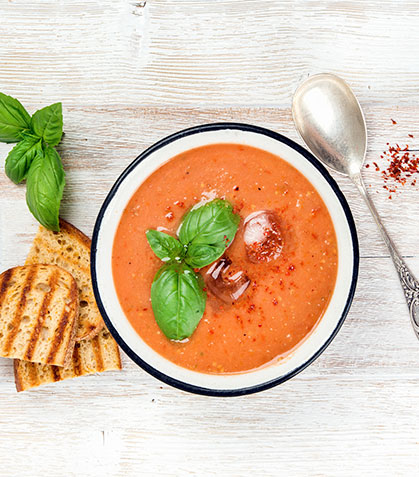
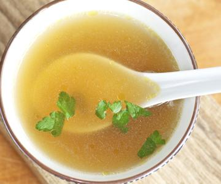

5 recetas de sopas para todos los días!
 Ir al contenido Menú principal Recetas Alternar menú Bebidas Arroces Ensaladas Carnes Cerdo Recetas con Pollo Pan Casero Pastas Pizzas, Tartas y Empanadas Pescados y mariscos Tapas y snacks Sopas y cremas Guisos, potajes y ollas Vegetarianas Conservas Recetas Dulces Alternar menú Tortas y Budines Galletitas Tartas Dulces Postres Helados Otros dulces Mas Recetas Alternar menú Recetas al Horno Recetas con Acelga Recetas con Berenjenas Recetas con Brócoli Recetas con Palta Recetas con Verduras Bajas Calorías Mondo Paulina Alternar menú Videos Veganos Trucos y Técnicas Quién Soy Prensa Tienda Online Alternar menú Curso de Cocina Online Recursos de cocina gratis II Inicio Recetas Sopas y cremas 5 sopas cremas para todos los días!
5 sopas cremas para todos los días!
Bienvenidos a Paulina Cocina! Después de la locura que fue el #Sopapalooza, paso a dejarles las recetas de sopas que hicimos en YouTube
La verdad que la sopa es un alimento riquísimo, se puede comer sola, de entrada, como plato principal, una locura!
Estas recetas de sopas cremas, son recetas fáciles y lo mejor es que (ya adivinaron) se pueden freezar!
Imagínense que llegan un día de lluvia y caos de tránsito a las nueve de la noche a su casa, y mientras se cambian la ropa mojada, se descongelan una sopa crema casera. Listo, te hice el día amigo!
Pueden ver el video completo acá y de paso suscribirse a YouTube haciendo clic acá .
Antes de que me maten a mensajes, me adelanto y les digo que la olla naranja herrrrmosísima que ven en el video es de Lecuine , y es un golazo!
sobre estas recetas de sopas caseras
Van a ver que son todas sopas cremas de verduras, super nutritivas y geniales para comer en cualquier momento.
Todas son distintas y cada una tiene un toque especial, pero todas comparten una cremosidad que no pueden creer!
Una vez que las hicieron, las pueden conservar uno o dos días en la heladera, o las pueden congelar en un tupper o un recipiente apto para freezer.
Para descongelarlas, lo ideal es sacarlas un ratito antes o mojar con agua caliente el pote, para que se despegue y llevar a una olla con un cachito de agua caliente. La tapan y en minutos nomas: sopa fresca!
Espero que lo disfruten y si quieren más recetas de sopas pueden buscar en Instagram con el #Sopapalooza que hay cosas increíbles!
Saludos y hasta la próxima
Juanita
Asistente
Sopa de choclo
ingredientes
manteca 1cda
diente de ajo 1
cebolla 1
lata de choclo 1
agua
caldito deshidratado 1 cda o medio cubito
queso crema 1 cda
1 rodaja de queso cremoso
sal
pimienta
perejil
Receta de sopa de choclo
con magia al servir
Cortar la cebolla y el diente de ajo, y llevar a una olla con manteca hasta que la cebolla esté cocida. Agregar el choclo, si lo hacen de choclo fresco tienen que hervirlo antes entre 8 a 10 minutos y luego desgranarlo. Agregar agua hasta cubrir, el caldo deshidratado un poco de pimienta y dejar cocinar tapado por unos 10 minutos. Retirar del fuego y una vez que baje la temperatura, pasar por un mixer o una mini pimer. Llevar nuevamente al fuego por unos minutos más y agregar el queso crema. Para servir, colocar un cubito de queso fresco en el fondo del bol, agregar la sopa crema de choclo y decorar con perejil picadoSopa de remolacha
Ingredientes
1 remolacha
1/2 zanahoria
1 tomate
1/2 cebolla
1 ramita de apio
agua
1 cdita de comino
1 cda de queso crema
sal
pimienta
Receta de sopa de remolacha
muy rica!
Primero cortar pelar y cortar la remolacha, la zanahoria, el tomate y la cebolla en cubos más o menos parejos. No se preocupen por cómo quedan, después la vamos a procesar! Llevar todos los vegetales a una olla, cubrir con agua, salpimentar y agregar una cucharadita pequeña de comino que le va muy bien a la sopa de remolacha. También pueden agregar una ramita de apio. Llevar la olla al fuego hasta que las verduras estén tiernas. Cuando se haya ido un poco el calor, sacamos el apio y trituramos bien. Servimos con una cucharada de queso crema para aportarle un poco de ácido que queda genial, perejil picado y si quieren, le pueden poner un chorrito de aceto como hice yo.
Sopa de tomates
ingredientes
4 tomates
1 diente de ajo
Agua
1 cda de azúcar
1 cdita de pimentón
aceite de oliva
sal
pimienta
Receta de sopa de tomate
super fresca!
Cortar en trozos los tomates, ponerlos en una asadera, agregar sal, pimienta, un poco de aceite y también le vamos a sumar un poco de azúcar, para que contrarreste un poco el ácido del tomate. Llevamos la placa al horno unos 40 minutos. En una olla vamos a poner un poco de aceite, el ajo picado y agregamos los tomates ya cocidos. Tapamos con agua, condimentamos y cocinamos mas o menos hasta que los tomates estén desechos. Sacamos del fuego y trituramos. Servir con unos croutones y un chorrito de aceite de oliva.
Sopa de brócoli
ingredientes
brócoli 1
1 diente de ajo
papa 1
cebolla 1
1 cda de manteca
agua
1 cdita de caldo deshidratado
1 huevo
merkén ahumado
sal
pimienta
Receta de sopa de brócoli
si, también se puede hacer de coliflor
Vamos a cortar el brócoli, van a ver que en el video uso bastante de brócoli, lo ideal es usarlo hasta que empieza a ponerse fibroso. También vamos a cortar la cebolla y el ajo, y la papa en rodajas. En una olla ponemos la manteca y agregamos la cebolla, el ajo, la papa y las partes del tallo del brócoli porque tardan más en cocinarse. Tapamos con agua, agregamos el caldo y cocinamos. Cuando la papa esté lista, sumamos los arbolitos de brócoli un poco más de agua y cocinamos hasta que esté todo tierno. Sacamos del fuego y cuando no esté muy caliente, trituramos. Van a ver que la papa le da una cremosidad genial a la sopa de brócoli. Yo la serví con un huevo poché y un poco de merkén ahumado porque me fascinó la idea!
Sopa de lentejas y curry
ingredientes
lentejas cocidas, 1 taza
1 diente de ajo
cebolla 1
morrón 1
papa 1
1 rodaja de zapallo
agua
1 cda de curry
cebolla de verdeo
sal
pimienta
jugo de limón
Receta de sopa de lentejas y curry
mi descubrimiento del año!
Primero vamos a cocinar las lentejas, esto lo pueden hacer el día anterior o usar lentejas de lata si quieren adelantar pasos. Como siempre, vamos a cortar la cebolla, el morrón y el ajo. La calabaza y la papa la cortamos en rodajas. En una olla con un poco de aceite, colocamos los vegetales y cuando están cocidos agregamos la calabaza, la papa y las lentejas cocidas. Tapamos con agua y agregamos 1 cdita de curry. Cocinar unos 20 minutos. Retiramos del fuego y trituramos. La serví con un poco de cebolla de verdeo picada y unas gotitas de jugo de limón que le queda increíble a esta sopa de lentejas y curry!
Publicado por Paulina cocina , el 30 de mayo de 2018. Esta entrada pertenece a: , calabaza , coliflor , Recetas con Brocoli .
Estas sopas cremas de vegetales son súper fáciles de hacer y quedan increíbles!
Votá esta receta
( 21 votos, promedio: 4,62 de 5)Para votar, pasá el mouse sobre las estrellas.
¿y? ¿qué te parece la receta?
compartila, guardala, imprimila
Recetas Relacionadas
Seguro te interesan estos posts
Cómo hacer gazpacho andaluz: con Anabel Cherubito
Recetaza e invitada de lujo.
2 de septiembre de 2015Salsa Parissiene: La reina de las salsas
Te cuento cómo hacer salsa Bechamel y lo mejor que le pasó en la vida: la salsa parisienne!
9 de junio de 2020Gazpacho de Sandía: mi gazpacho favorito
El brebaje de los dioses andaluces.
18 de noviembre de 2014Cómo hacer cubitos de caldo caseros: ¡Calditos más sanos!
El secreto de mi éxito.
30 de diciembre de 2013Navegación de entradas
← Cómo hacer pastas caseras: guía completa! 3 recetas rápidas y fáciles! #MagiasBajoneras → Suscribirse 3 Comentarios Más Reciente Más Antiguo Más votados Comentarios en línea Ver todos los comentarios Montse 6 de marzo de 2020 22:35Las sopas me encantan todas, algo caliente y reponedor siempre me sienta muy bien. Pero me quedo de todas, con la de brócoli. Con cebolla, ajo y papa para rematar la combinación energética y saludable. Mi debilidad en verdura es el brócoli, con miles de buenas propiedades. Enhorabuena por la receta. Apetitosa.
0 Responder Oscar 24 de agosto de 2018 15:04¡Muy bueno! Para cuántas personas están pensadas las recetas
0 Responder Alejandra 6 de junio de 2018 15:14Hola Paulina,
Me encanto la receta de la sopa de choclo una pregunta se puede congelar? cuanto tiempo?
Muchas gracias!!!
PD: Aguanten las papas nivel Dios!!!!
0 Responder¿Qué receta buscás?
¡Seguime en redes sociales!
2.900.000 suscriptores en Youtube 2.313.945 seguidores en Instagram 1.678.042 Seguidores en Facebook 135.634 seguidores en TwitterSeguime en Youtube . No te pierdas ninguna receta. ¡Es gratis!
Las más leídas
Fondue de queso: Receta original y acompañamiento Pan relleno: 2 recetas originales y únicas Estofado de pollo con papas y salsa: una receta clásica Guiso de mondongo Merengue Suizo: Como hacerlo paso a pasoLegales
Aviso Legal Política de privacidad Política de Cookies Contacto Paulina Cocina por www.paulinacocina.net se distribuye bajo una Licencia Creative Commons Atribución-NoComercial 4.0 Internacional | Paulina Cocina® es una marca registrada wpDiscuz Insert